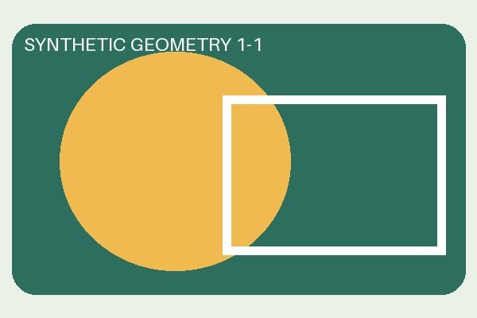
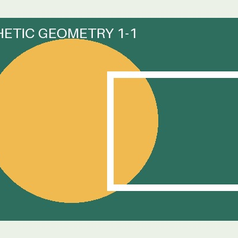
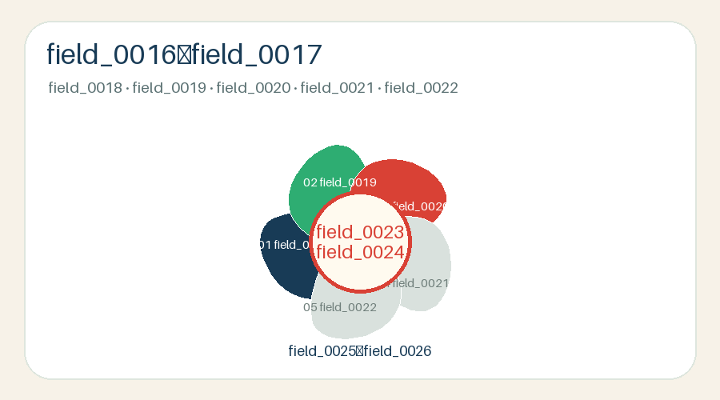
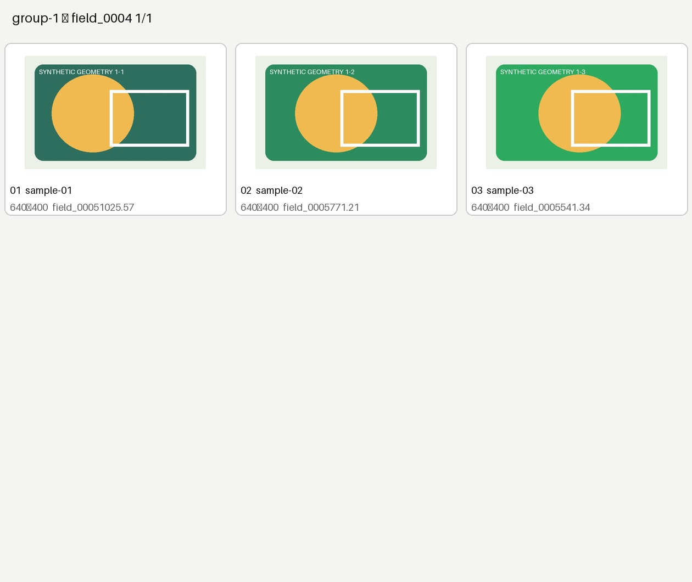

SYNTHETIC DEMONSTRATION. All images are newly generated geometric material. No person, school, class, course venue or original article is included.
| 01 | Reusable geometry and local image processing |

Actual output from the preserved process_photo function.
 Center crop |  Procedural pixels only |
Actual preserved helper outputs; no real photographs.
PETAL 01 | Synthetic material review |
| Inputs： | 12 new geometric JPEG images |
| Privacy： | No original photographs or article data |
| Publishing： | Local preview only |

Actual output from the complete historical contact-sheet program.
This preview is local output. It does not demonstrate a WeChat draft submission or the original business workflow.